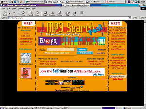
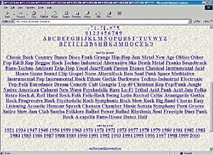
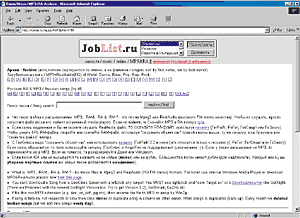
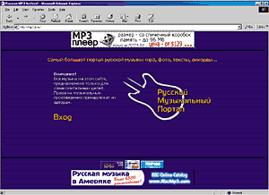
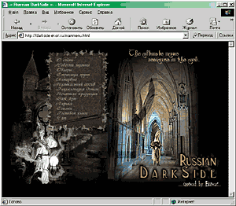
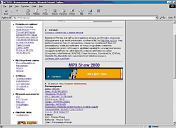

|
Количество ссылок на MP3-файлы в Сети определить сложно - их сотни тысяч.
Как в таком изобилии найти именно то, что вас интересует, где разыскать редкие
или очень старые композиции - вот, что интересует начинающих коллекционеров
цифрового звука.
Одна английская пословица гласит - "So many people, so many characters"
(сколько людей, столько и характеров). В Internet, каким бы "не настоящим" миром
его ни считали, эти слова нисколько не теряют своего смысла, ведь каждый ищет в
Сети что-то свое. Зачем люди посещают Internet? Некоторые делают это
исключительно в информационных и образовательных целях, кто-то играет в игры,
многие пользователи заходят во Всемирную сеть для того, чтобы пообщаться с
друзьями и коллегами. Но вскоре после появления формата сжатия звука MР3
появилась еще одна категория пользователей: те, кто посвящает большую часть
своего "сетевого" времени поиску и download музыкальных файлов.
В нашем журнале мы неоднократно освещали вопросы, связанные с появлением
этого звукового формата, описывали устройства и программы воспроизведения и др.
Сегодня же, в рубрике "Компьютер дома", мы решили рассказать вам о том, где
именно можно найти интересующие вас музыкальные композиции, как быстро выделить
нужный альбом из огромного архива файлов, и ответить на многие другие
вопросы.
Формат сжатия MPEG Layer3 был разработан в 1996 г. и стал следующим звеном в
цепочке эволюции после MPEG Layer2. Отцифровка музыкальных композиций вначале не
была основной целью MP3 (новый стандарт предполагалось использовать в
аудиоконференциях). Но вскоре стало ясно, что возможности применения этого
формата куда шире. После сертификации этого формата все музыкальные композиции
стали плавно перекочевывать в Internet, а для проигрывания MP3 появилось великое
множество специализированных программ. Естественно, это чуть не вызвало скандал:
звукозаписывающие компании боялись понести огромные убытки. Но встать на пути
технического прогресса они уже не смогли: некоторые пользователи сразу же после
появления отцифровывают целые альбомы и выкладывают их на свои домашние
странички. Теперь существуют даже плееры МР3-файлов, которые, несомненно,
опережают кассетные модели по качеству воспроизведения и габаритам. Итак, в
результате технического прогресса, хотим мы того или нет, формат МР3 прочно
обосновался в нашей жизни.
На сегодняшний день практически все существующие музыкальные композиции
переведены в цифровой формат MР3. Не отчаивайтесь, если не сможете найти любимую
песню. Сайтов, посвященных MР3, очень много, и все они, как правило,
специализированы по жанрам. Практически на всех страницах есть поисковая
система, которая поможет вам найти интересующую композицию в архиве файлов или
даст ссылку на сайт Internet, где эту песню найти.
Любой поисковый сервер на запрос "MР3" выдаст более 50 тыс. ссылок. Не
рекомендуется "плавать" по каждому линку, на это уйдут годы. Кроме того, как
выяснилось, многие ссылки попросту не работают и путешествия по ним лишь помогут
вам убить свое время. Сегодня мы поговорим лишь о тех страницах Сети, которые
предлагают действительно богатый выбор музыки.
MP3 Search
Это, пожалуй, один из самых крупных сайтов, посвященных как отечественной,
так и зарубежной музыке. Архив этой странички насчитывает несколько тысяч
файлов. В основном представлена поп-музыка. Горячие новинки всегда можно найти в
хит-парадах (Российский MTV Тоp100, MTV hot 20, EuroTop 20 и т. д.). Несомненное
достоинство mp3.org.ru -
наличие хорошо сделанной поисковой системы.

http://www.mp3.org.ru/ пожалуй, один из самых крупных сайтов,
посвященных как отечественной, так и зарубежной музыке.
На запрос об известной рок-группе Metallica поисковая система нашла 210
композиций! Возник даже вопрос, знает ли Metallica о том, что они написали
столько песен. Дизайн сайта сделан таким образом, что пользователь может
обратиться как к полному архиву файлов, так и к хит-парадам и поисковой
системе.
MP3 Ocean
Этот сайт на все 100% оправдывает свое название!!! http://www.mp3ocean.newmail.ru/ - это настоящий океан
музыкальных файлов. Здесь есть все, начиная от саундтреков к мультфильмам и
заканчивая композициями Guns'n'Roses.

http://www.mp3ocean.newmail.ru/ - это настоящий океан
музыкальных файлов.
Интерфейс странички устроен очень просто и не содержит ничего лишнего.
По-моему, все сделано даже слишком скучно и однообразно.
При входе вы сможете произвести поиск интересующей песни по следующим
параметрам: названию файла или песни, имени артиста или группы, жанру музыки и,
что удивительно, по году выпуска композиции (архив содержит данные вплоть до
1921 г.(!)). Ocean содержит около 40 тыс.(!) файлов. Данная страница хороша тем,
что пользователь всегда сможет найти даже очень редкие и старые композиции.
Понравится она и тем, кто обладает утонченным вкусом и любит на досуге послушать
песенку-другую из мультфильма Asterix.
Omen/Music/MP3+RA Archive
Еще одна страница Сети, посвященная цифровому звуку. Обладает достаточно
богатой библиотекой файлов и не плохой поисковой системой: на запрос о
конкретной группе (в данном случае Metallica) Omen выдал ссылки на песни,
дискографию группы, тексты, аккорды и ряд другой интересной информации. При
поиске сайт пользуется услугами сервера aport.ru. Сайт специализируется на таких направлениях музыки,
как Dance, Rave, Rap и Rock.

Оmen.ru/music/MP3&RA.htm специализируется
на Dance, Rave, Rap и Rock.
К сожалению, на Omen вы не найдете полных альбомов своих любимых
исполнителей, т. к. здесь присутствуют в основном так называемые the best of, т.
е. синглы и лучшие песни, по мнению пользователей. Еще одна особенность этого
сайта в том, что специализируется он не только на MР3-файлах, но и на MIDI, и
файлах формата RealAudio (т. е. музыка в реальном времени).
Russian MP3 Archive
Russian MP3 Archive можно назвать одним из самых крупных музыкальных архивов,
посвященных отечественной музыке. Навряд ли где-нибудь вы найдете такое огромное
количество МР3-музыки, фотографий музыкантов, аккордов и текстов.

В архиве http://www.mp3.ai.ru/ есть песни почти всех отечественных
исполнителей за последние лет десять. А новые файлы поступают практически
ежедневно.
На сайте находится раздел новостей, естественно, сам архив русскоязычной
МР3-музыки (названия групп в нем расположены по алфавиту; нажав на название
группы, вы можете увидеть, какие песни есть на сайте, и скачать. Примерно раз в
неделю в архив добавляются несколько десятков новых песен, о чем пользователям
объявляется на странице новостей), тексты и аккорды песен (в архиве более 2000
текстов песен, если к песне есть аккорды, то вы увидите их вместе с текстом),
сборник фотографий российских музыкантов, софт - самые лучшие программы,
необходимые для скачивания, прослушивания, управления музыкальными файлами.
Нельзя не отметить такие разделы, как "Форум", в котором можно оставить свою
запись и пообщаться с другими посетителями сайта, и "Поиск", где можно
осуществить поиск по этому, www.mpr.ai.ru, и другим сайтам с зарубежной музыкой,
а также подписаться на новостную рассылку.
Кроме всего прочего, сайт обладает богатым набором ссылок на другие
русскоязычные и зарубежные сайты, посвященные МР3.
Russian DarkSide
Если вы любите музыку потяжелее, если среди ваших кумиров выступают такие
группы, как Blind Guardian, Nightwish, MoonSpell, AC/DC, Metallica, Guns'n Roses
и др., то DarkSide - это сайт вашей мечты. Тысячи файлов, клипов, аккордов,
ссылок - сайт располагает всем, что нужно истинному ценителю музыки в стиле рок,
металл и транс во всех их вариациях и направлениях. Удобный дизайн,
легкодоступный FTP-сервер и высокая информативность - вот чем понравился darkside.ekort.ru.

DarkSide - просто клад информации.
Здесь вы всегда сможете найти последние новости, посмотреть обзоры и даже
пообщаться в чате с единомышленниками.
На ftp даксайда файлы представлены не только в формате МР3, но и другом, не
менее популярном формате - VQF. Если у вас нет проигрывателя для этих файлов, то
на сайте можно найти ссылку, где его скачать. Называется он Liquid Player.
Должен сказать, что большинство файлов на сайте представлены именно в VQF, а не
в MP3 (тем не менее МР3 на сайте несколько тысяч). Какой из форматов лучше,
сказать трудно, но если вам это особенно интересно, рекомендую обратиться к ПЛ ?
1 за 2000 г., в котором подробно рассматривались различия, плюсы и минусы этих
форматов.
MP3.RU - Музыкальный портал
MP3.RU - пожалуй, самый крупный отечественный сайт, посвященный MP3. Чего
здесь только нет - и новости, и сайты групп, и чат, и множество ссылок. Удобным
решением является наличие отечественного и зарубежного хит-парадов и отдельных
разделов, посвященных танцевальной музыке и вашим любимым радиостанциям. В
разделе MTV вы всегда сможете найти последние новости и обзоры, программы,
информацию о проектах и ведущих.

MP3.RU - пожалуй, самый крупный отечественный сайт,
посвященный MP3.
Очень грамотным решением можно назвать то, что в разделе "Софт" находятся
программы на все случаи жизни. Это и кодировщики, и грабберы, и проигрыватели, а
также интерфейсы и плагины.
MP3 European & American
Charts
Это англоязычный сайт. По своему дизайну похож на http://www.mp3.org.ru/. Здесь
есть такие разделы, как European Top50, "Top Mp3 в Сети", лучшие синглы и целый
раздел, посвященный полным альбомам исполнителей самых разнообразных жанров.
Одним из плюсов сайта является то, что на нем представлены ссылки на лучшие
коллекции MP3-файлов в Сети. Вы сможете скачать любой файл из 4 тыс. хранящихся
в архиве сайта.
Мы надеемся, что данный материал поможет вам найти среди огромного количества
сайтов, посвященных музыке в формате MP3, именно те композиции, которые хотелось
бы, и будет интересен не только начинающим пользователям, но и интернетчикам со
стажем.
|